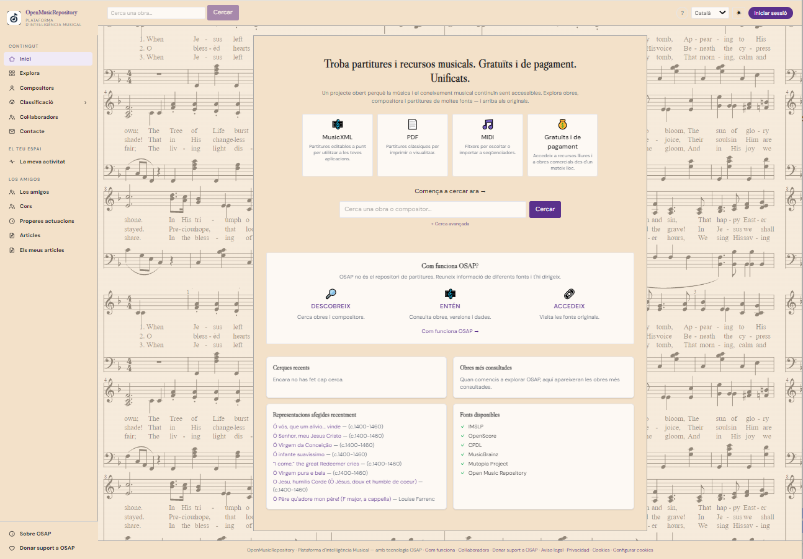
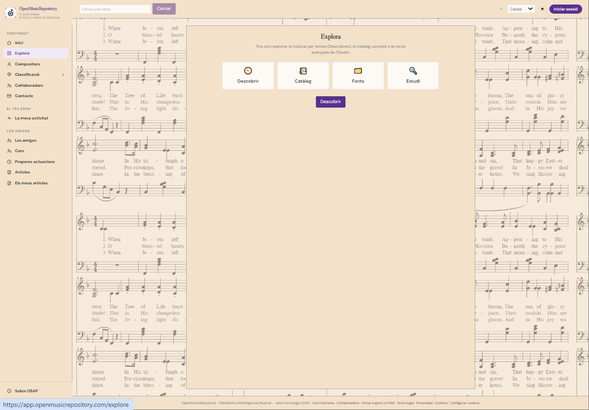
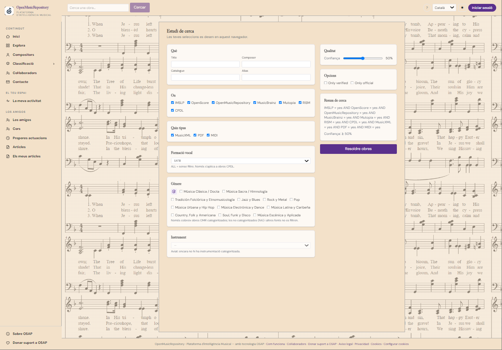

Search study
Refine a music search using classification criteria such as instrumentation or vocal formation, when available.
User guide
Find works, composers and musical resources using the main search, advanced filters and discovery tools.

On the home page, enter a work’s title or a composer’s name in the main search box. If you know only part of the title, try its most distinctive words. Open a result to view its details and available versions.
Advanced search lets you separate criteria to narrow the results:
| Field | What to enter | Tip |
|---|---|---|
| Composer | The author’s first or last name. | Try name variants if no result appears. |
| Title | The work’s title or a recognisable part of it. | Initially, leave out long subtitles or punctuation. |
| Catalogue | A reference such as BWV, KV/Köchel, Hoboken or another thematic catalogue number. | Enter the abbreviation and number as you know them. |
You can combine fields to narrow the results. If you cannot find the work, remove filters and try again with less information.

The Explore section brings together different ways to browse the catalogue. From there, you can access the source catalogue and source list, as well as more detailed search tools.
Refine a music search using classification criteria such as instrumentation or vocal formation, when available.
Shows the status and capabilities of connected sources. A listed source is not necessarily available at all times.
Search for people by name and open their profile to view biographical information, references and related works.

Once you have found a work, review the list of representations that OSAP associates with it. Each representation is a specific edition or version and may offer a different format and set of actions. The music viewer appears in that list only when the format can be converted to a compatible format and the file is accessible.

If the viewer option does not appear, the format may be incompatible, the file may be unavailable, or the source may not allow access. See Sources and formats to distinguish file types and available actions.

A result may group several representations of the same work from different providers. The confidence level is an estimate of OSAP’s identification; it does not necessarily mean every provider has explicitly confirmed that they refer to the same work. If several matches are possible, compare their titles, composers, sources and supporting evidence before choosing.